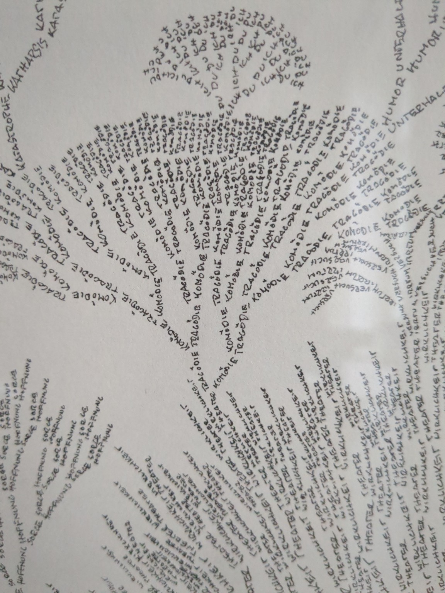
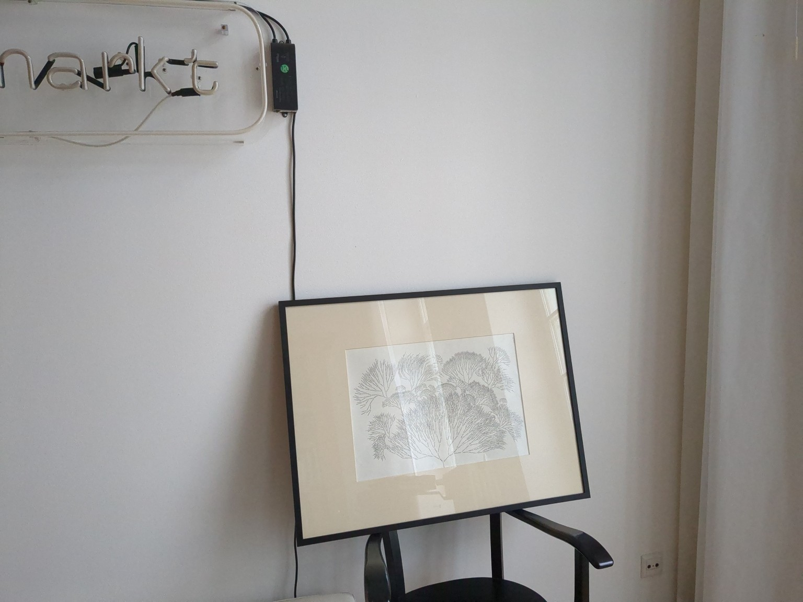
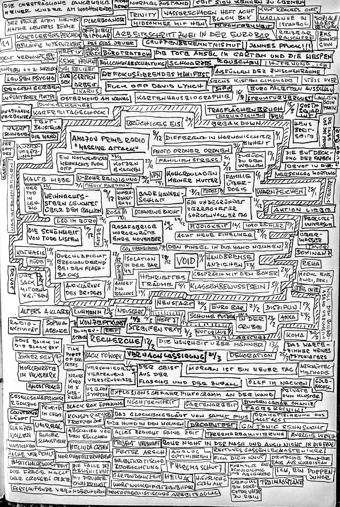
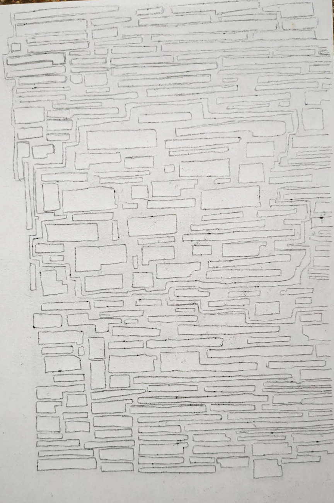
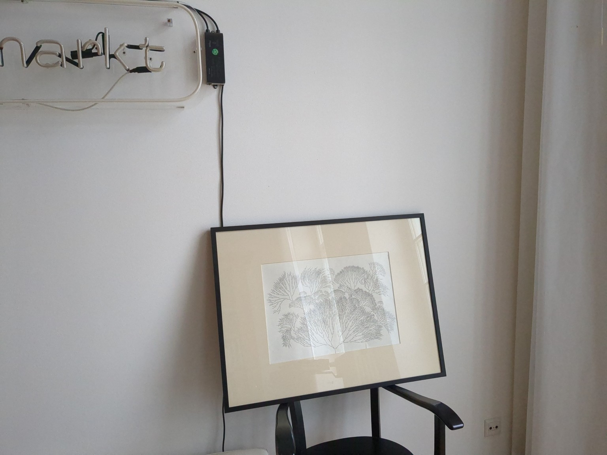
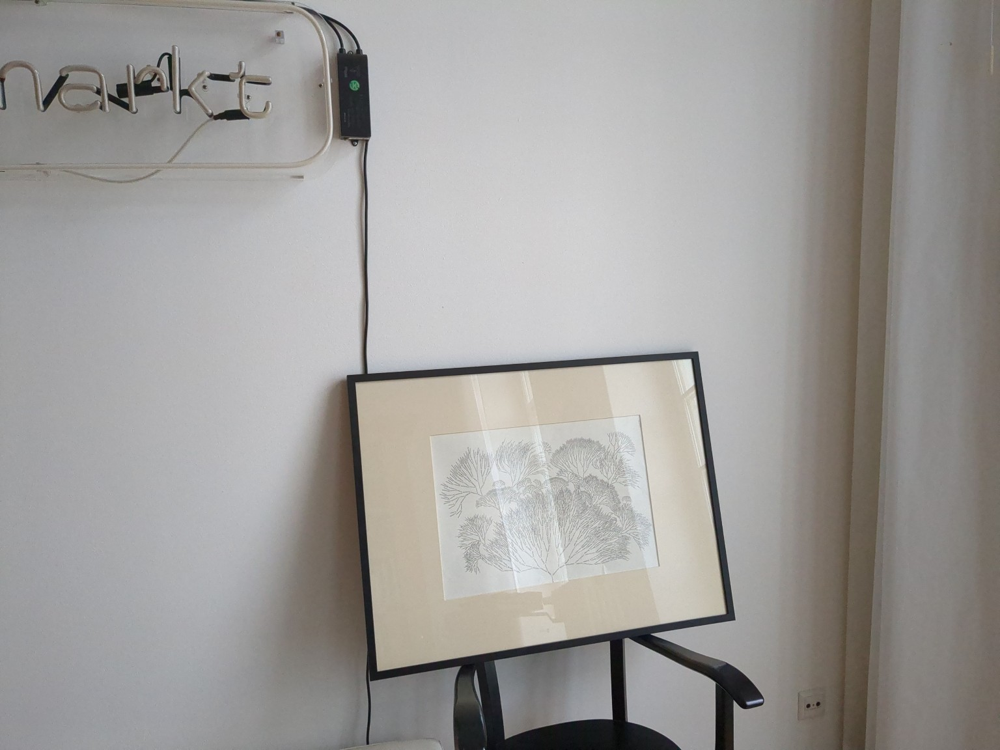
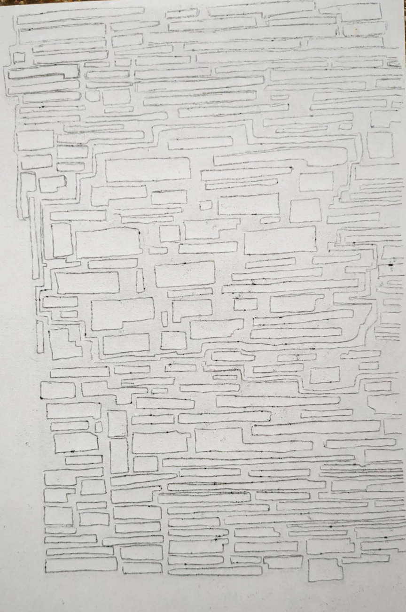
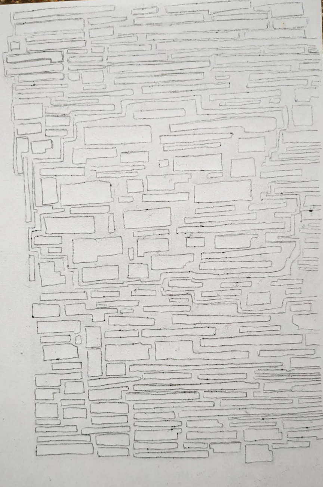

In dieser Arbeit verdichtet sich eine psychedelisch-pulsierende Topografie, die an geologische Schnitte,
neuronale Landschaften oder energetische Karten erinnert – und zugleich das Porträt eines inneren Ichs andeutet.
Die Linien: unablässig mäandernd, Schicht um Schicht aufgetragen, ein visueller Klangteppich aus Neonpink,
Giftgrün, Orange, Schwarz. Die Farben: gleichzeitig expressiv und ritualisiert.
Im Zentrum ein Strudel, eine Verdickung – ein energetisches Herz oder ein zerberstendes Ich?
Die goldene Fläche am oberen Rand wirkt wie eine heilige Kappe, ein zerfließender Nimbus,
der den schwarzen Hintergrund durchschimmern lässt: ein Spannungsfeld zwischen Glanz und Auflösung, Ego und Kosmos.
Formal oszilliert das Werk zwischen Malerei und Objekt. Die Farbschichten stehen regelrecht auf dem Papier,
greifen ineinander wie tektonische Platten. Es ist ein Bild, das nicht nur gesehen,
sondern körperlich empfunden werden will – ein flamboyantes Fossil der Seele.
Ob als Selbstporträt gemeint oder nicht: Es strahlt ein radikales Innen aus, das sich weder in klare Konturen
noch in psychologische Deutung fassen lässt. Vielmehr lädt es ein, sich in seinem visuellen Labyrinth zu verlieren –
und vielleicht dort einen Zipfel von sich selbst zu erkennen.
THEATER und WIRKLICHKEIT
Medium: Fineliner 0,05 mm auf historischem Werkstattpapier
Format: ca. 59 × 42 cm (gerahmt)
Entstehungsjahr: 2023
Serie: Fraktalneuronen
Status: Derzeit ausgestellt im Büro der Intendantin des Deutschen Theaters, Berlin
➤ Beschreibung einblenden
Diese Arbeit kartiert ein Denken, das weder lineare Logik noch theatralische Illusionen bevorzugt,
sondern sich stattdessen in verzweigten Mustern aus Wörtern, Satzfragmenten und linearen Verästelungen entfaltet –
wie ein lebendes Diagramm eines ewigen Spiels zwischen Bühne und Leben.


Deleted Black Box (I)
Medium: Linoldruck auf Papier
Entstehung: Schnitt: ca. 2019 · Druck: Dezember 2024
Format: ca. 16 × 23 cm (etwas größer als DIN A5)
Serie: Deleted Black Box
Status: Nicht mehr im Besitz
Beschreibung
Dieser Linoldruck ist eine visuelle Spurensicherung eines früheren Tagebucheintrags aus der Serie Black Box (geführt im X17-System).
Die ursprüngliche Seite enthielt dichterliegende, einzeln stehende Textsegmente – Sätze, Fragmente, Wörter.
Durch das Umrahmen mit einem stark durchdringenden Marker entstand auf der Rückseite der Kopie ein geisterhaftes Negativbild der Textstruktur –
wie ein Speicherabdruck, nachdem das Bewusstsein selbst gelöscht wurde.
Diese Rückseitenstruktur wurde verkleinert, per Durchschlagpapier auf eine Linolplatte übertragen und sorgfältig ausgeschnitten.
Das Ergebnis: ein labyrinthartiges Netz aus Lücken und Verbindungslinien – wie ein vergessener Stadtplan der Gedanken,
rekonstruiert durch das, was ausgelöscht schien.
Kontext
Die Arbeit gehört zur fortlaufenden Auseinandersetzung mit autopoietischen Schreibprozessen, der Ästhetik von Notationen und dem Versuch,
Gedankengänge sichtbar zu machen – nicht durch ihre Inhalte, sondern durch ihre Abwesenheiten.
🗂 Deleted Black Box (I)
Die Spur der Löschung
Medium: Linoldruck auf Papier
Format: ca. 16 × 23 cm (etwas größer als DIN A5)
Schnitt: vermutlich 2019
Druck: Dezember 2024
Kontextualisierung: Mai 2025 – als Teil der Black Box-Dokumentation
Zuordnung: Werkgruppe: Black Box / Linienarchiv / Löschsysteme
Status: Gesichert zur späteren Veröffentlichung, Webintegration oder Ausstellung
Beschreibung:
Dieser Linoldruck ist eine visuelle Spurensicherung eines früheren Tagebucheintrags aus der Serie Black Box
(geführt im X17-System). Die ursprüngliche Seite enthielt dichterliegende, einzeln stehende Textsegmente –
Sätze, Fragmente, Wörter. Durch das Umrahmen mit einem stark durchdringenden Marker entstand auf der Rückseite
der Kopie ein geisterhaftes Negativbild der Textstruktur – wie ein Speicherabdruck, nachdem das Bewusstsein selbst gelöscht wurde.
Diese Rückseitenstruktur wurde verkleinert, per Durchschlagpapier auf eine Linolplatte übertragen und sorgfältig ausgeschnitten.
Das Ergebnis: ein labyrinthartiges Netz aus Lücken und Verbindungslinien – wie ein vergessener Stadtplan der Gedanken,
rekonstruiert durch das, was ausgelöscht schien.
Werkstufen:
🖋 Ursprungsseite mit umrahmten Textfeldern (Handschrift, Marker)
🫥 Rückseitige Durchzeichnung (nicht mehr auffindbar, aber grafisch rekonstruiert)
🧾 Verkleinerte Vorzeichnungen (zwei Versionen)
📡 Durchschlagzeichnung auf Linol
🨠Finaler Druck mit Magenta-Farbmischung auf historischem Papier
📠Begleittext: „Spur einer getilgten Seite“
Begleitbilder (Prozessansichten):


GOHONZON – Ein meditativer Wirbel aus Schrift, Linie und Resonanz
Material: Japanpapier, Tusche, Pinsel und Feder
Entstehungszeit: Januar 2025
Format: Zwischen DIN A3 und A2
Status: Überreicht an Jörg, meinen Lehrer der Achtsamkeit
Beschreibung und Analyse
Dieses Werk entstand aus der Bewegung zwischen zwei Polen: dem HIER & JETZT und dem HIER & DORT.
Es trägt den Titel „Gohonzon“ – in Anlehnung an das Verehrungsobjekt der Nichiren-Tradition,
ohne es zu imitieren oder zu appropriieren. Stattdessen wird das Prinzip des inneren Spiegels, der geistigen Verdichtung
und der rhythmischen Wiederkehr in ein eigenständiges, poetisches System übersetzt.
Die zentrale, muschel- oder wirbelförmige Figur erinnert an ein natürliches Schaltwerk – embryonal, dynamisch, offen für Deutung.
Die inneren Textbänder, in Schwarz auf Weiß mit der Feder gezogen, bestehen aus mantraartigen Wiederholungen wie:
„Hier ist der Ort – hier ist die Zeit – hier ist der Ort – hier ist die Zeit“
Sie rhythmisieren den Raum, erschaffen ein visuelles Sutra, das nicht gelesen, sondern durchwandert werden will.
Es ist eine Form des Denkens, die sich dem linearen Verstehen entzieht – und gerade darin ihre Kraft entfaltet.
Zen-Splitter im Außen
Der äußere Raum, gefüllt mit handgeschriebenen Textfeldern in Rot, Orange, Violett und Pink,
wirkt wie ein Feld aus Koans, Mantra-Bruchstücken und existenziellen Erkenntniskrümeln.
„Ohne Griff kein Halt – ohne Halt kein Griff“
„Hier die Wurzel, dort der Halm, der den Himmel tastet“
„Der Schatten trägt mehr Licht, als er wirft“
Diese Sätze stehen fragmentarisch und autonom, fordern aber auch das Nebeneinander als poetische Klangfläche.
Sie nehmen die Form nicht zum Anlass für Dekor, sondern für Verdichtung.
Zur Frage von Kunst oder Kitsch
Der Gohonzon balanciert auf dem Grat zwischen meditativer Geste und überbordendem Pathos.
Was ihn davor schützt, ins Kitschige zu kippen, ist die konsequente Eigenlogik der Form –
jede Linie folgt einer inneren Regel, keine kreuzt eine andere. Dieses Prinzip strukturiert auch den Textfluss:
alles bleibt offen, doch nichts ist beliebig.
In der Kombination von Material, Handschrift, Wiederholung und Offentext entsteht ein hochkonzentriertes
Artefakt geistiger Bewegung.
Schlussbemerkung
Der Gohonzon 2025 ist kein sakraler Gegenstand im traditionellen Sinne, sondern ein ritueller Impulsgeber.
Er lädt nicht zur Andacht, sondern zur Wiederkehr ein – zum wiederholten Sehen, Lesen, Verlieren und Finden.
Er wurde Jörg, meinem Achtsamkeitslehrer, als Geschenk überreicht – nicht als Antwort, sondern als weiterer Stein im Fluss.
Dyadische Oszillographie I
Entstehungsjahr: Mai 2025
Format: ca. 594 × 420 mm (DIN A2)
Technik: Bleistift, Bambuspinsel, Feder und Koh-I-Noor Ink Tuš auf Zeichenpapier
Status: im Besitz des Künstlers
Beschreibung:
Diese Oszillographie ist keine bloße Zeichnung – sie ist ein Gespräch. Zwischen zwei Polen, zwei
Stimmen, zwei inneren Rhythmen. Die Linienform erinnert an eine stehende Welle – eine dyadische
Beziehung, die sich nicht auflöst, sondern fortwährend neu verschränkt.
Links: eine Ansprache des Zwischenraums selbst – ein Gedicht über das Warten, das Halten, das
Nichtbrechen. Rechts: eine Reflexion über Nähe, über das Tasten, das Oszillieren zwischen Du und Ich.
Das Werk fragt nicht nach Auflösung. Es fragt nach Haltung im Schweben. Der Titel „Oszillographie“ nimmt
Bezug auf elektrische Spannungsverläufe – doch hier geht es um emotionale, existentielle Spannungen,
die sich durch visuelle Sprache materialisieren.
Eine Spur von Dialog, eingefasst in Form.
BIN ICH DU
BIN ICH DU (2025)
Drei verschlungene Zellformen, verbunden durch ein dunkles Trägermedium.
Inmitten der Formen leuchten drei Wörter: BIN – ICH – DU.
Diese Anordnung entfaltet eine dialogische Ontologie.
Es ist kein Satz im grammatikalischen Sinn – sondern ein Zustand: Ich bin – nur im Spiegel des Du.
Die Zeichnung übersetzt das in eine organische Sprache:
neuronale Windungen, Denkfalten, Beziehungsadern.
Der Marker wirkt wie ein Lichtimpuls im Inneren des Gedankens.
Technik: bearbeitete Kopie, Textmarker Neongelb
Papier: DIN A4, Jahr: 2025
Teil einer Serie bearbeiteter Kopien – als wäre Denken ein Kreislauf aus Erinnerung, Hervorhebung und Verwandlung.
Aktuelle Linien
Linienstruktur I (2025)Fraktal der Entscheidung (2025)Der Sicherste Ort (2024)
Entstehungsjahr: Oktober 2024
Ort: Mill Valley, USA
Format: ca. DIN A2
Material: Japanische Tinte mit Feder aus dem 19. Jahrhundert auf gealtertem Kartonpapier
Status: Vergeben
Diese großformatige Zeichnung entstand im Herbst 2024, noch ehe der Begriff der „Nooiden“ geboren war.
Rückblickend lässt sich ihre Struktur als früher Vertreter dieser Gattung lesen – ein prä-Nooide,
der bereits autopoietisch arbeitete, ohne sich seiner selbst bewusst zu sein.
Aus einem Zentrum brechen Linien hervor, streben auseinander, bündeln sich, widersprechen sich, ordnen sich neu.
Ein dialektisches Gefüge, das in der Form die Bewegung des Denkens sichtbar macht.
Keine Mitteilung, kein Ziel – sondern das Ringen mit Spannung, Richtung, Widerstand.
Gezeichnet mit historischer Feder auf gealtertem Karton: ein Hybrid aus Vergangenheit und Jetzt, aus Technik und Hand.
Die Arbeit markiert einen Ursprungspunkt – als sich das Denken noch tastend entrollte, bevor es einen Namen für sich fand.
Heute ist dieses Werk nicht mehr im Besitz des Künstlers – es bleibt als Erinnerung und Spur,
ein Fragment im Gesamtorganismus der Nooiden.
Nooiden – Denkembryonen
Nooide 1 (2025)Nooide 2 (2025)
Ein System, das nicht transportiert, sondern sich selbst generiert.
Kein Zeichnen als Mitteilung – sondern als autopoietischer Akt.
Linien werden zu Begriffen,
Begriffe zu Strömen,
Ströme zu Blockaden.
So vermisst sich ein Denken selbst – tastend, wachsend, widerspenstig.
Vielleicht eine Sprache ohne Alphabet.
Vielleicht ein Embryo der Abstraktion.
Gezeichnet im schwarzen Theaternotizbuch, 2025, mit uni-ball GEL IMPACT 1.0 Black.
Format: minimal kleiner als DIN A5.
Schaltwerk 1 / Wahrscheinlichkeit 1:96
Fineliner auf Papier, gelbes Notizbuch (unter DIN A5) – 2024
Entstanden im Rehabilitationszentrum während der Qualifikation zur Fachkraft in der öffentlichen Verwaltung
Diese Zeichnung entstammt einer Übergangszeit – zwischen Innen- und Außenwelt, zwischen Rehabilitation und neuer Berufsrolle.
Sie wirkt wie das geöffnete Innenleben einer Maschine, einer Denkzentrale, einer im Selbstlauf pulsierenden Struktur.
Die Linien verästeln sich aus der Mitte heraus, als wolle das Zentrum sich selbst vergessen machen, um in die Peripherie zu strahlen.
Im Zentrum jedoch ist eine mathematische Notiz eingeschrieben:
1
3
×
(1/2)5
= 1/96
Ein kleiner, unaufdringlicher Bruch – und zugleich ein Programm. Eine Wahrscheinlichkeitsaussage, die davon spricht, wie selten ein bestimmter Weg unter vielen sein kann.
Es ist, als hätte der Zeichner inmitten aller Verästelung einen einzigen möglichen Pfad kurz ausgerechnet.
Das Diagramm bleibt kryptisch: Nummerierte Punkte, verbunden durch verschlungene, aber geordnete Linien, die keine offensichtliche Hierarchie kennen.
Und doch ist alles verbunden, alles scheint aufeinander zu reagieren.
Zwischen technischem Schaltplan und neuronaler Poesie entsteht eine Art künstlerisch-existenzielle Entscheidungsarchitektur –
ein Versuch, Komplexität sichtbar zu machen, ohne sie aufzulösen.
Was hier geschieht, ist nicht die Darstellung eines Systems, sondern die Bezeugung seiner Durchquerung.
Unaufführbare Szene
Bleistiftzeichnung, Schwarzes Notizbuch, 2025
Eine Skizze wie ein Notensatz für ein Theaterstück, das sich dem Geschehen verweigert.
Keine Figur, kein Dialog – nur Linien, die sich einander ausweichen und doch nie entkommen.
Jede Spur trägt die Möglichkeit eines Gedankens in sich, ohne ihn auszusprechen.
Es ist ein Bühnenbild der Verhältnisse, ein knotiges Probenprotokoll:
Versuchsanordnungen, Verwerfungen, Wiederholungen, ein Netz aus Möglichkeiten.
Vielleicht die Dramaturgie eines Moments, der nie gekommen ist.
Vielleicht das Archiv eines Innenraums, der sich auf der Schwelle zur Handlung immer wieder zurückfaltet.
Was sichtbar wird, ist nicht Handlung, sondern Spannung.
Protoform (2025)
Papier, Karton, Bleistift und Lumicolor von Staedtler, lichtecht, DIN A4
Noch ohne Namen,
aber schon auf dem Weg.
Die Linien, ein innerer Code –
nicht gelesen, doch geschrieben.
Verdichtetes Davor,
eine Andeutung von Gestalt.
Kein Organ – ein Anfang.
Kein Zentrum – ein Drängen nach Mitte.
Und alles ist schon da.
Nur nicht entschieden.
TOTEM – Serie einer inneren Statik (2025)
Inmitten eines fragilen Alltags aus Umbrüchen, Reizen und Zerstreuung wächst eine Form, die sich weigert, laut zu sein.
Eine Struktur, reduziert, wiederholt, gewandelt.
Sie wirkt schlicht – fast naiv – und birgt doch eine unerhörte Kraft:
Sicherheit im Tun.
Ein Halt, nicht durch Abschottung, sondern durch Vertrauen in das eigene System.
Diese Totems entstehen nicht, um zu dominieren,
sondern um zu erinnern.
Sie stehen – aufrecht, atmend –
wie kleine Monumente des inneren Gleichgewichts.
Jede Variante ist ein neuer Körper,
jedes Blatt ein weiterer Beweis:
Aus Reduktion kann Vielfalt wachsen.
Aus Wiederholung kann Würde entstehen.
Die Linie ist nicht mehr bloß Spur,
sie ist Stimme.
Sie sagt:
„Ich bin wieder hier.
Ich kenne den Weg.
Ich gehe ihn neu.“
Diese Serie ist ein stiller Schwur an die eigene Form.
Ein Gespräch mit der Wiederholung.
Ein Gebet aus Linien.
Totem ITotem IITotem IIITotem IVTotem VTotem VI
Weitere Zeichnungen
Weitere Werke folgen nach Sichtung und Digitalisierung der Archivmaterialien.


 


 
